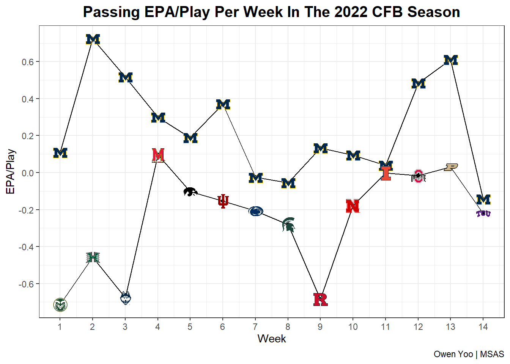
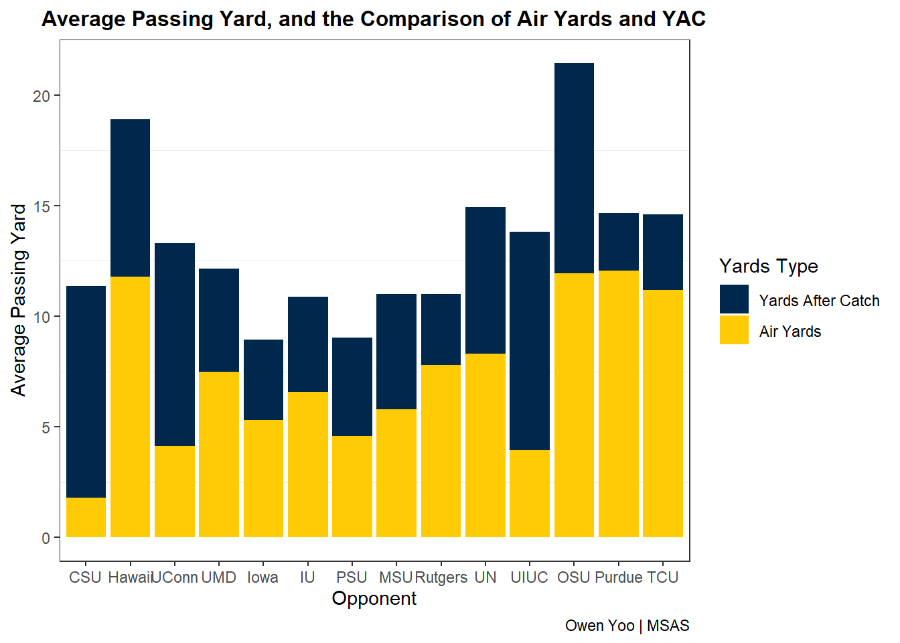

Passion Plots!
One thing that I admire about statistics is Data Visualizations. I’ve made a couple plots that haven’t really been featured but are still really cool. This page is dedicated to these plots, and will even include the snippets of code I used to make them. Use the “Show” buttons to see the code.
Analysis of 2023’s Michigan Football Team’s Passing Offense
These plots analyze the efficiency of Michigan’s passing offense in the 2022 season using data provided by Statsbomb for Michigan Sports Analytics Society. One of the metrics used is EPA (Expected Points Added), a way of quantifying the effect of a single play.
# Loading all necessary libraries and datasets
library(tidyverse)
library(readr)
library(ggimage)
pbp <- read_csv("~/CSV Files/StatsBomb Michigan 2022 Plays.csv")
epa <- read_csv("~/CSV Files/Michigan 2022 EPA Data.csv")
# Creating a data frame for all of the college aesthetics and other necessary parts of the plot
colors <-data.frame(offense_team_name = c('Michigan Wolverines', 'Colorado State Rams', 'Hawaii Rainbow Warriors',
'Connecticut Huskies', 'Maryland Terrapins', 'Iowa Hawkeyes', 'Indiana Hoosiers',
'Penn State Nittany Lions', 'Michigan State Spartans', 'Rutgers Scarlet Knights',
'Nebraska Cornhuskers', 'Illinois Fighting Illini', 'Ohio State Buckeyes',
'Purdue Boilermakers', 'TCU Horned Frogs'),
color_one = c('#00274C', '#1E4D2B', '#024731', '#000E2F', '#E03A3E', '#FFCD00',
'#990000', '#041E42', '#18453B', '#CC0033', '#E41C38', '#13294B',
'#BB0000', '#CEB888', '#4D1979'),
color_two = c('#FFCB05', '#C8C372', '#C8C8C8', '#FFFFFF', '#FFD520', '#000000',
'#EEEDEB', '#FFFFFF', '#FFFFFF', '#5F6A72', '#000000', '#E84A27',
'#666666', '#000000', '#A3A9AC'),
team_image = c('https://a.espncdn.com/combiner/i?img=/i/teamlogos/ncaa/500/130.png',
'https://a.espncdn.com/combiner/i?img=/i/teamlogos/ncaa/500/36.png',
'https://a.espncdn.com/combiner/i?img=/i/teamlogos/ncaa/500/62.png',
'https://a.espncdn.com/combiner/i?img=/i/teamlogos/ncaa/500/41.png',
'https://a.espncdn.com/combiner/i?img=/i/teamlogos/ncaa/500/120.png',
'https://a.espncdn.com/combiner/i?img=/i/teamlogos/ncaa/500/2294.png',
'https://a.espncdn.com/combiner/i?img=/i/teamlogos/ncaa/500/84.png',
'https://a.espncdn.com/combiner/i?img=/i/teamlogos/ncaa/500/213.png',
'https://a.espncdn.com/combiner/i?img=/i/teamlogos/ncaa/500/127.png',
'https://a.espncdn.com/combiner/i?img=/i/teamlogos/ncaa/500/164.png',
'https://a.espncdn.com/combiner/i?img=/i/teamlogos/ncaa/500/158.png',
'https://a.espncdn.com/combiner/i?img=/i/teamlogos/ncaa/500/356.png',
'https://a.espncdn.com/i/teamlogos/ncaa/500/194.png',
'https://a.espncdn.com/i/teamlogos/ncaa/500/2509.png',
'https://a.espncdn.com/combiner/i?img=/i/teamlogos/ncaa/500/2628.png'))
week_ordered <- c('Week 1', 'Week 2', 'Week 3', 'Week 4', 'Week 5', 'Week 6', 'Week 7', 'Week 8', 'Week 9',
'Week 10', 'Week 11', 'Week 12', 'Week 13', 'Week 14', 'Week 18')
num <- 1:14
team_init <- c('CSU', 'Hawaii', 'UConn', 'UMD', 'Iowa', 'IU', 'PSU', 'MSU', 'Rutgers',
'UN', 'UIUC', 'OSU', 'Purdue', 'TCU')
# Filtering data by both Michigan and their opponents
pbp_full <- left_join(pbp, epa, by = "play_uuid")
pbp_pass <- pbp_full |>
filter(play_type == 'Pass',
offense_team_name == 'Michigan Wolverines')
pbp_opp <- pbp_full |>
filter(play_type == 'Pass',
defense_team_name == 'Michigan Wolverines')
# Create Michigan's Total EPA
epatotal_by_week <- pbp_pass |>
group_by(week, offense_team_name) |>
summarize(total_epa = sum(play_scrimmage_epa)) |>
arrange((factor(week, levels = week_ordered)))
epatotal_by_week$is_mich <- 'Michigan'
epatotal_by_week$numweek <- num
# Create Michigan's Avg. EPA
epaavg_by_week <- pbp_pass |>
group_by(week, offense_team_name) |>
summarize(avg_epa = mean(play_scrimmage_epa)) |>
arrange(factor(week, levels = week_ordered))
epaavg_by_week$is_mich <- 'Michigan'
epaavg_by_week$numweek <- num
# Create Opponent's Total EPA
epatotal_opp <- pbp_opp |>
group_by(week, offense_team_name) |>
summarize(total_epa = sum(play_scrimmage_epa)) |>
arrange(factor(week, levels = week_ordered))
epatotal_opp$is_mich <- 'Opponent'
epatotal_opp$numweek <- num
# Create Opponent's Avg. EPA
epaavg_opp <- pbp_opp |>
group_by(week, offense_team_name) |>
summarize(avg_epa = mean(play_scrimmage_epa)) |>
arrange(factor(week, levels = week_ordered))
epaavg_opp$is_mich <- 'Opponent'
epaavg_opp$numweek <- num
# Create data frame with all total EPA
epatotal <- rbind(epatotal_by_week, epatotal_opp)
epatotal <- left_join(epatotal, colors, by = 'offense_team_name')
# Create data frame with all avg. EPA
epaavg <- rbind(epaavg_by_week, epaavg_opp)
epaavg <- left_join(epaavg, colors, by = 'offense_team_name')epaavg |>
ggplot(aes(x = numweek, y = avg_epa, group = is_mich)) +
geom_line() +
geom_point() +
geom_image(aes(image = team_image), size = 0.03, asp = 16/9) +
theme_bw() +
labs(x = "Week",
y = "EPA/Play",
title = "Passing EPA/Play Per Week In The 2022 CFB Season",
caption = "Owen Yoo | MSAS") +
scale_x_continuous(breaks = scales::pretty_breaks(n=15))+
scale_y_continuous(breaks = scales::pretty_breaks(n=8))+
theme(plot.title = element_text(size = 15, hjust = 0.5, face = "bold"),
plot.subtitle = element_text(size = 16, hjust = 0.5))
epatotal |>
ggplot(aes(x = numweek, y = total_epa, group = is_mich)) +
geom_line() +
geom_point() +
geom_image(aes(image = team_image), size = 0.03, asp = 16/9) +
theme_bw() +
labs(x = "Week",
y = "Total EPA",
title = "Total Passing EPA Per Week In The 2022 CFB Season",
caption = "Owen Yoo | MSAS") +
scale_x_continuous(breaks = scales::pretty_breaks(n=15))+
scale_y_continuous(breaks = scales::pretty_breaks(n=8))+
theme(plot.title = element_text(size = 15, hjust = 0.5, face = "bold"),
plot.subtitle = element_text(size = 16, hjust = 0.5))
options(dplyr.summarise.inform = FALSE)
# Creating avg air yards per week
air <- pbp_pass |>
filter(play_pass_outcome == TRUE,
!is.na(play_pass_yards_air)) |>
group_by(week, offense_team_name, defense_team_name) |>
summarize(yds = mean(play_pass_yards_air)) |>
arrange((factor(week, levels = week_ordered))) |>
mutate(type = 'Air Yards')
air$team_abbr <- team_init
air$numweek <- num
# Creating avg YAC per week
after <- pbp_pass |>
filter(play_pass_outcome == TRUE,
!is.na(play_pass_yards_air)) |>
group_by(week, offense_team_name, defense_team_name) |>
summarize(yds = mean(play_pass_yards_after_catch)) |>
arrange((factor(week, levels = week_ordered))) |>
mutate(type = 'Yards After Catch')
after$team_abbr <- team_init
after$numweek <- num
# Combining data
yac <- rbind(after, air)
yac$type <- factor(yac$type, levels = c('Yards After Catch', 'Air Yards'))
yac |>
ggplot(aes(x = fct_reorder(team_abbr, numweek), y = yds, fill = type)) +
geom_col() +
scale_fill_manual(values = c("#00274C", "#FFCB05")) +
theme_bw() +
labs (x = "Opponent",
y = "Average Passing Yard",
title = "Average Passing Yard, and the Comparison of Air Yards and YAC",
caption = "Owen Yoo | MSAS",
fill = "Yards Type") +
theme(panel.grid.major = element_blank(),
plot.title = element_text(size = 12, hjust = 0.5, face = "bold"))